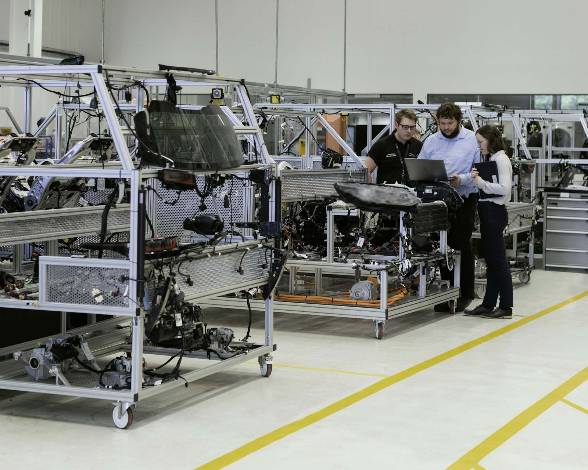
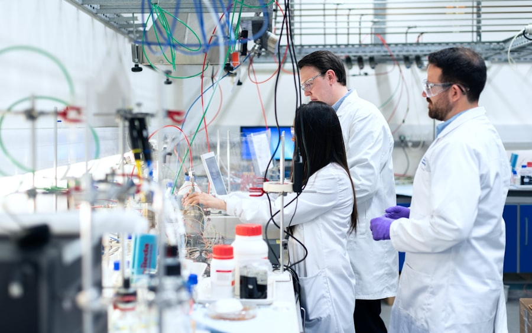
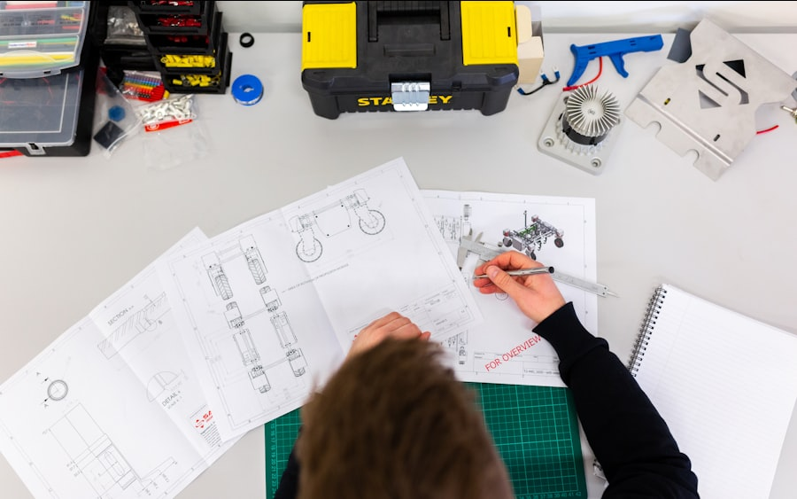
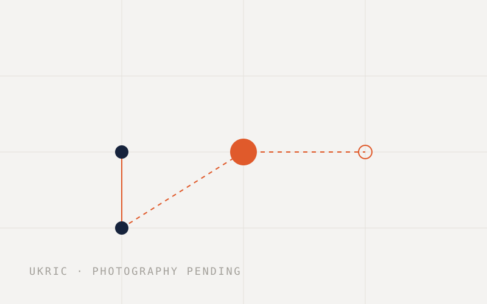

Brain circulation
Ukraine's future runs through its human capital
We build the institutional architecture that turns brain drain into circulation — connecting expertise to the work of modernizing Ukraine's economy.

The case, in figures
4.4M
Displacement. Ukrainians remain under EU temporary protection, down from a peak of 5.7M — for most, the decision to return is deferred, not made.
74%
Domestic demand. Of Ukrainian employers call labour shortage a serious problem, with over 200,000 vacancies unfilled.
2026–2040
The window. The years in which it is still possible to influence where competencies land and how dense professional networks become.
Source · Eurostat · European Business Association, 2025
How we work
All our work →
The model
Three operating modes, one mission
Return, Recruit, Retain — circulation starts remote, because knowledge moves before people can.
Read →

UGTI
One engine: build, integrate, host
The Competency Gap Atlas, the Argonaut mechanism, and expertise embedded into real tasks.
Read →

Hosted programmes
UKRIC: invention education, K–12
The first programme under the Foundation's institutional umbrella.
Read →
How an integration runs
-
01
Map
Competency gaps identified with sector leaders and recorded in the Atlas.
-
02
Source
The Argonaut mechanism matches a carrier of expertise to a defined task.
-
03
Integrate
The Foundation manages the engagement — remote first, no relocation required.
-
04
Measure
Outcome documented, then the behavioural test: repeat engagement and referral.
We measure integrations, not registrations.
Trust is measured behaviourally: first integration → repeat → referral. Referral share is the earliest signal the system works — and the model accounts only for its own contribution, not for macroeconomic trends.